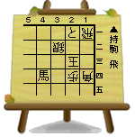
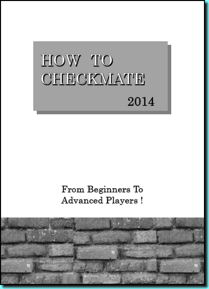

メニュー
解けてうれしい詰将棋の英訳版
ＨＯＷ ＴＯ ＣＨＥＣＫＭＡＴＥ のご案内
初心者から中級者上級者にも扱える１～７手詰め問題を掲載。簡単な問題から難しい問題で構成。
海外向けの詰将棋本としては珍しい。今回約４０問掲載。携帯性がありB7サイズでコンパクト、手に納まります。
英語版で作成！問題図は大きく見やすく、ヒントも示し解答も掲載しました。


詰将棋・英語版
HOW TOCHECKMATE
将棋を孫に伝える会担当 三宅 までTEL 090-6678-3012kaitou6678@yahoo.co.jp 将棋の終盤の手筋
将棋を孫に伝える会担当 三宅 までTEL 090-6678-3012kaitou6678@yahoo.co.jp
完全英語版の将棋の終盤の手筋・読みである詰将棋を約４０問、Ｂ７サイズで冊子にしました。はじめたばかりの初心者の方から中級、上級者の皆様に楽しんでいただける冊子。棋力アップにも役立つ冊子です。海外の方々にプレゼントして下さい。
日本の伝統・文化の一つである将棋を伝えたい、楽しみを伝えたい、世界の人に、子供から大人まで。時を超えて、繋げたい、次の世代にも、盤と駒を使った大切なコミニュケーション。
【お求め等】１０冊８００円と、送料８０円で合計８８０円（税込）です。また、申込みは１０冊以上でお願いしています。
/将棋を孫に伝える会/SINCE 2011 /